Tegel of natuursteen
Tegels zijn gebakken klei en zand, met of zonder glazuur. Natuursteen wordt uit groeven gehaald en is nooit twee keer gelijk.
Tegelzetter in Lichtenvoorde
Ik tegel wanden en vloeren voor particulieren en bouwbedrijven in Oost- en Midden-Nederland. Met eigen bus, eigen gereedschap en 35 jaar vakmanschap.
Badkamers, toiletten, keukens, gangen, vloeren en terrassen. Van een complete renovatie in een vakantiewoning tot het kitwerk in een douche.
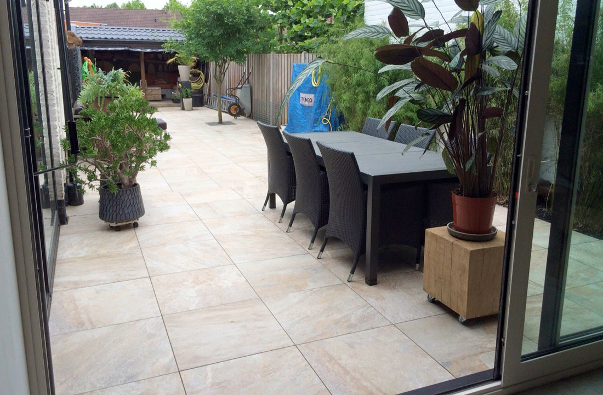
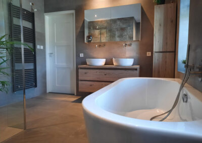
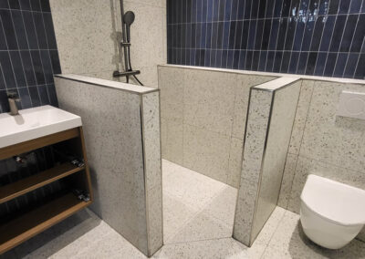
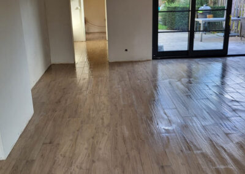
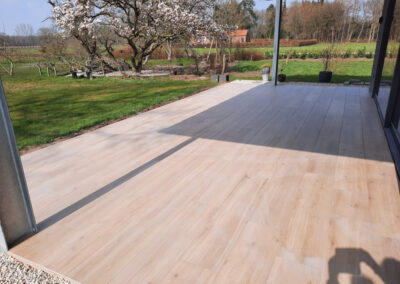
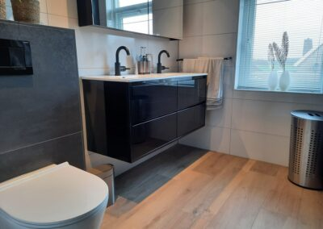
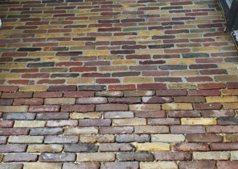
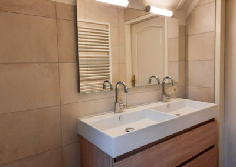
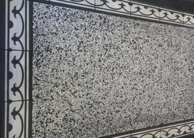
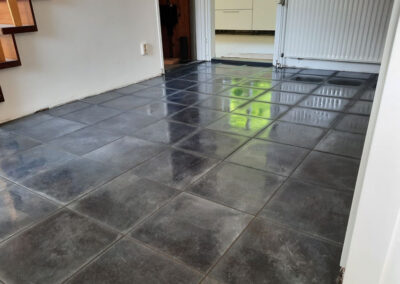
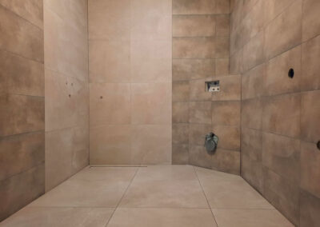
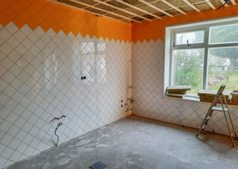
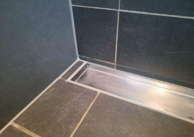
Voor particulieren die hun badkamer of vloer laten doen, en voor bouwbedrijven die een vaste vakman zoeken voor het tegelwerk.
Een kitvoeg die loslaat in de douche, keuken of wc lijkt klein, maar kan voor lekkage zorgen. Dat wilt u voorkomen.
Ik haal eerst al het oude kitwerk grondig weg en maak alles schoon. Pas dan hecht nieuwe kit goed. Zo zijn alle voegen, kieren en naden weer duurzaam dicht en blijft uw badkamer of keuken langer mooi.
Bel voor een afspraak: 06 51171936„De kwaliteit van een interieur wordt meestal bepaald door de mate van afwerking.”
Ik ben Herbert Lubbers en werk al 35 jaar als tegelzetter. In 2006 ben ik voor mezelf begonnen en ik ben me steeds meer gaan specialiseren in een perfecte afwerking van vloeren en wanden. Smaken veranderen en de eisen worden hoger, dus ik blijf me aanpassen.
Overleg vind ik net zo belangrijk als het tegelen zelf: met u, en met de andere aannemers op de bouw. Ik maak altijd een reële schatting van tijd en kosten. Valt iets in de praktijk anders uit, dan komen we er samen uit.
Na het werk ruil ik de lijmkam in voor een trombone, bij dweilorkest 'Doktors Swingende Infuustoeters'.
35 jaar in het vak, sinds 2006 zelfstandig, met eigen bus en gereedschap.
Tegels bepalen voor lange tijd hoe uw huis eruitziet. Een paar dingen om over na te denken.
Tegels zijn gebakken klei en zand, met of zonder glazuur. Natuursteen wordt uit groeven gehaald en is nooit twee keer gelijk.
Tegels en natuursteen op de vloer zijn helemaal terug. Met vloerverwarming voelt de vloer niet meer koud aan.
Beton of cement is ideaal. Over bestaande tegels kan ook. Op hout komt eerst een zwaluwstaartvloer met cement.
Wordt een ruimte intensief gebruikt, kies dan een slijtvastere tegel. Formaat en legpatroon bepalen de uitstraling.
Vertel wat u wilt laten doen, dan kom ik kijken en krijgt u een eerlijke prijsopgave.
06 51171936